Street Football Club
Logo Development
The exploration for the main logo was divided in 2 rough categories: Badges and Typographic. The idea was to create a visual that captures the speed and chaos of the brand but also harkens back to football and street culture.
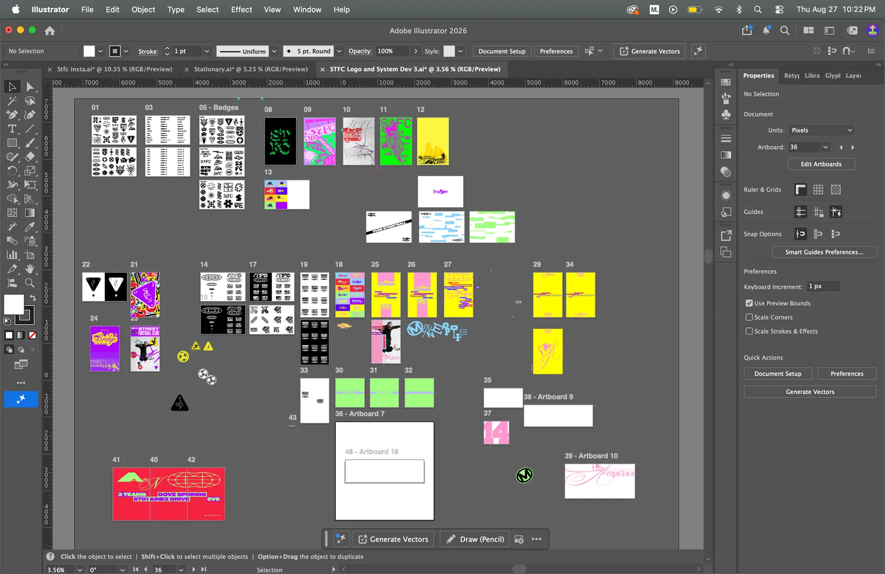
Core Branding
The utilitarian look is for the base that shall create contrast between the identities for the cities. The green and grey are inspired by asphalt and moss as seen on the streets.
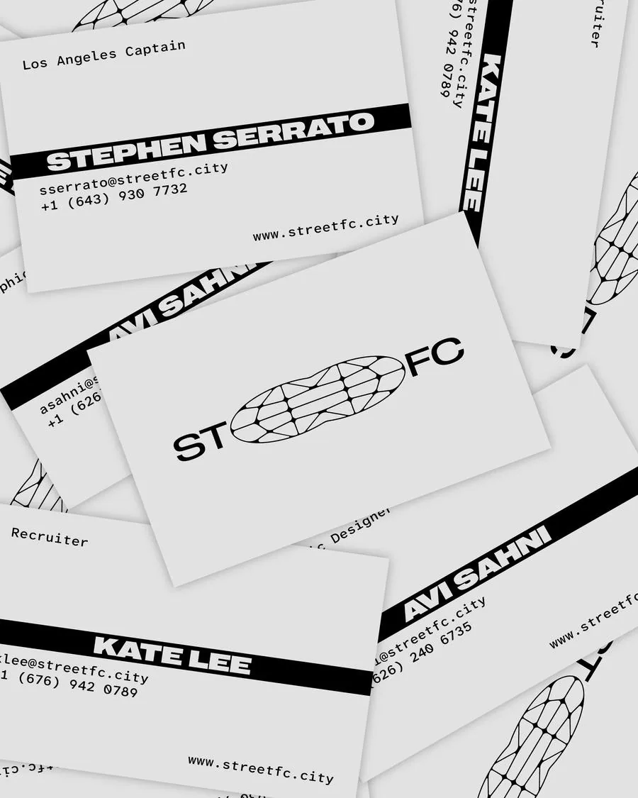
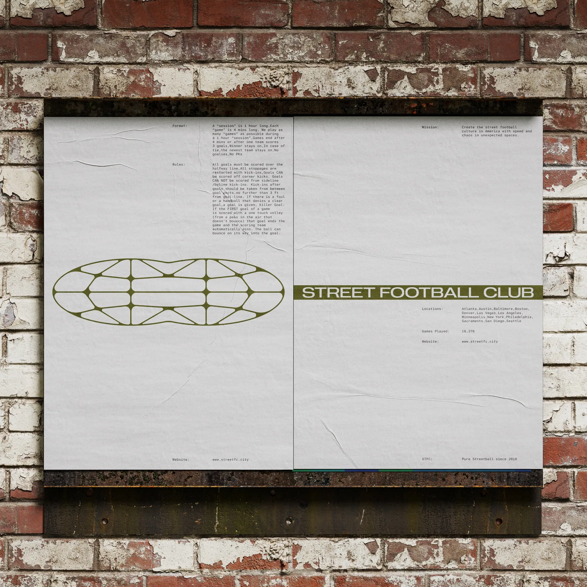
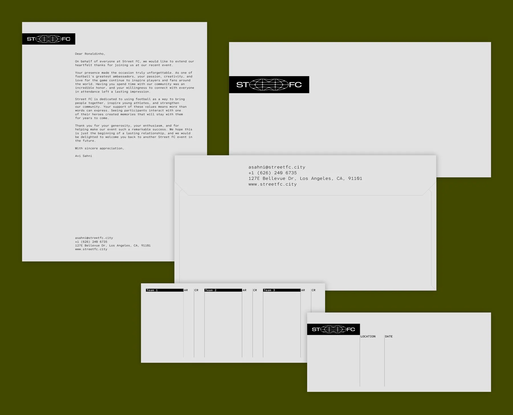
City Branding
Each city got a unique identity, with typography and colors that show the vibrance and chaos of the football scene in each city.
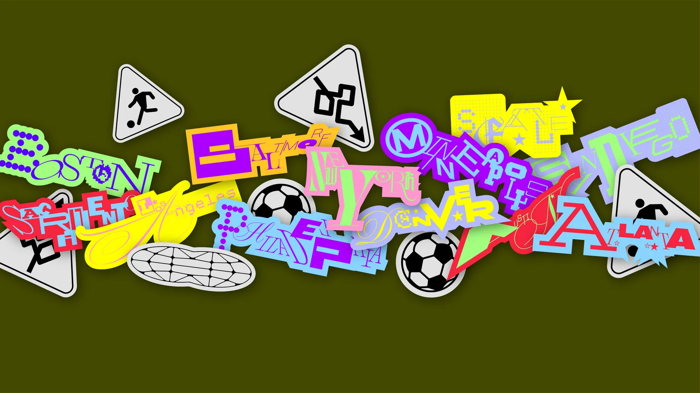
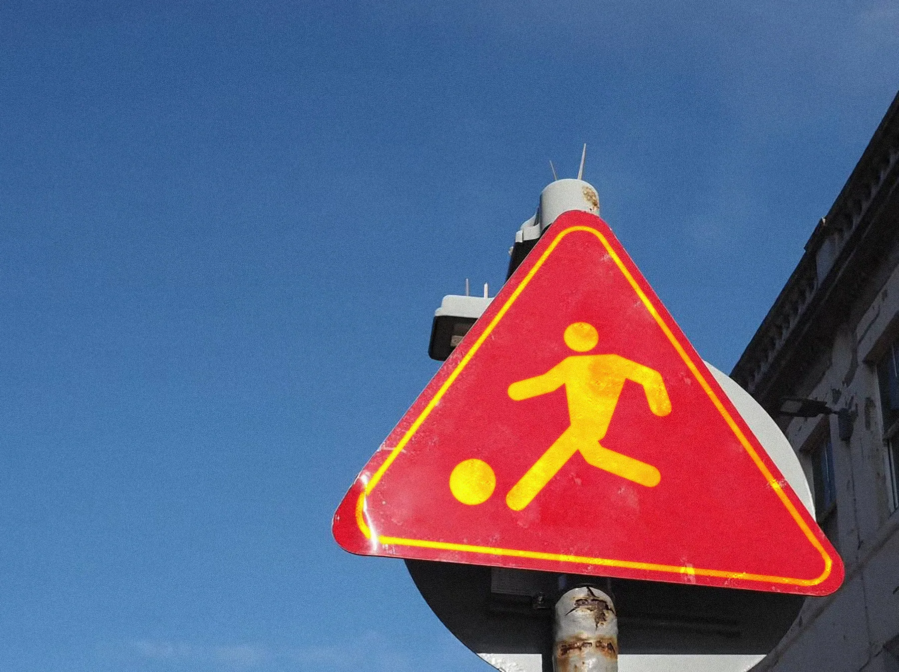
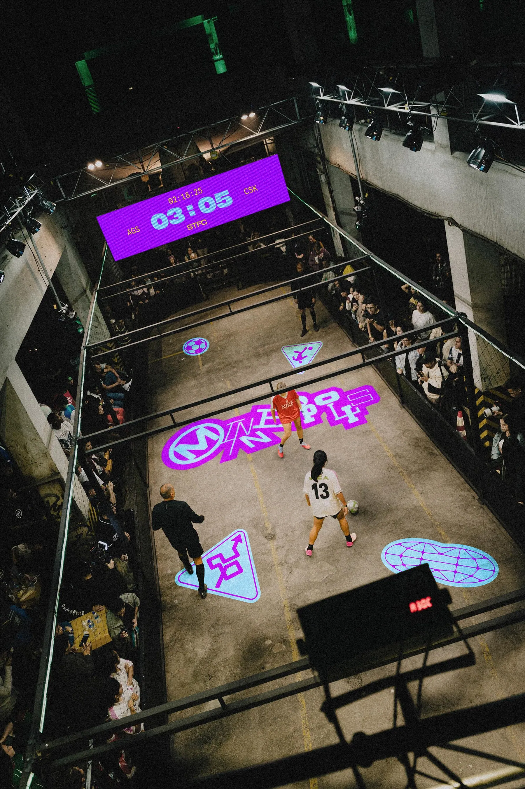
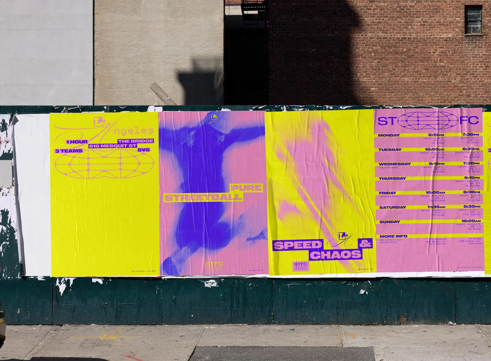
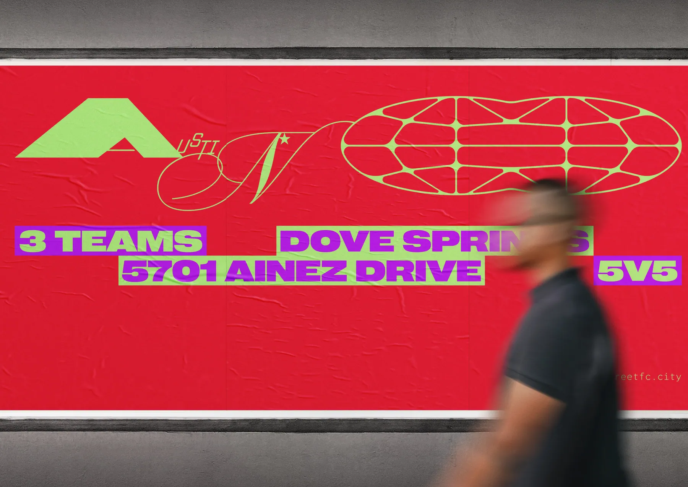
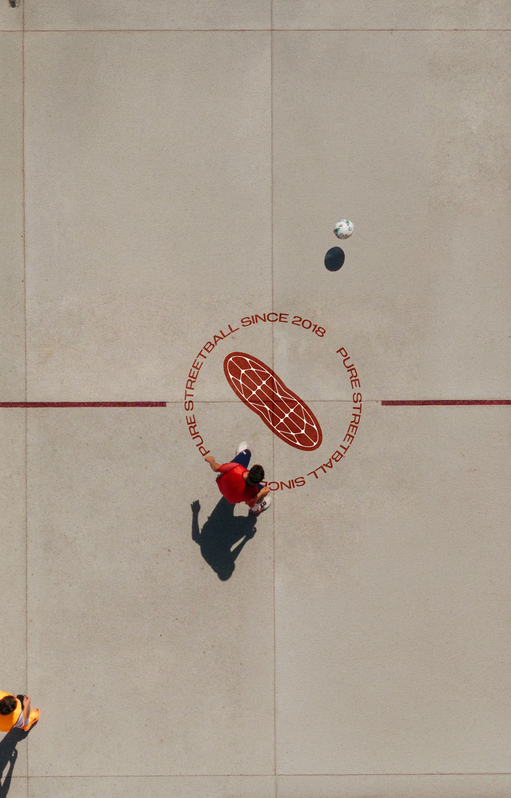
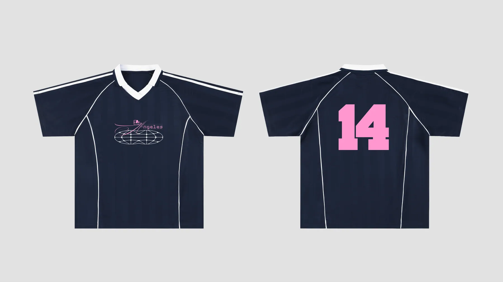
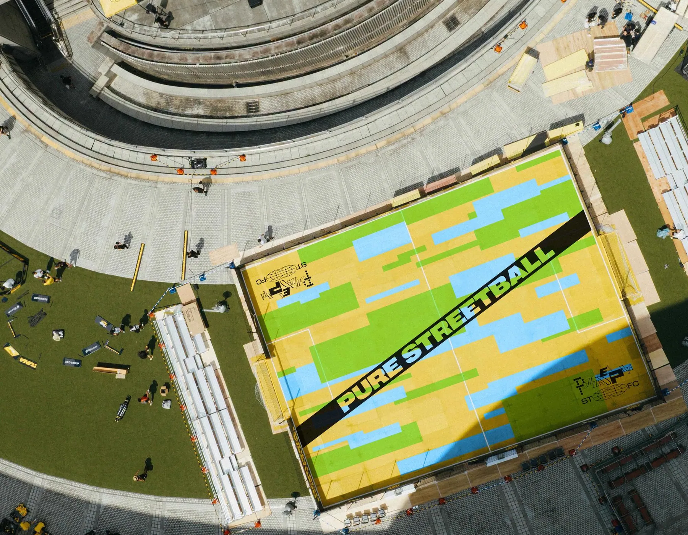
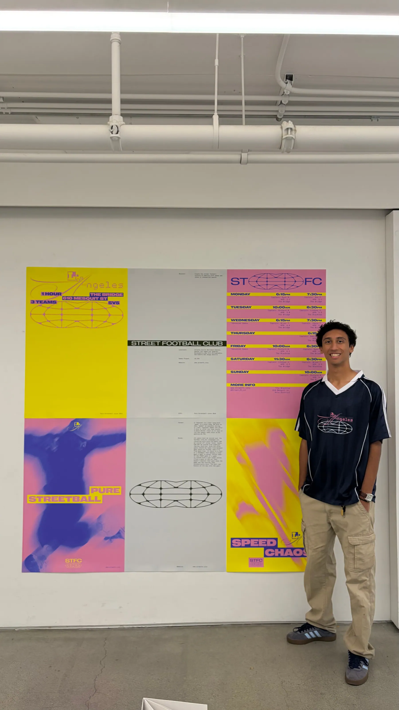